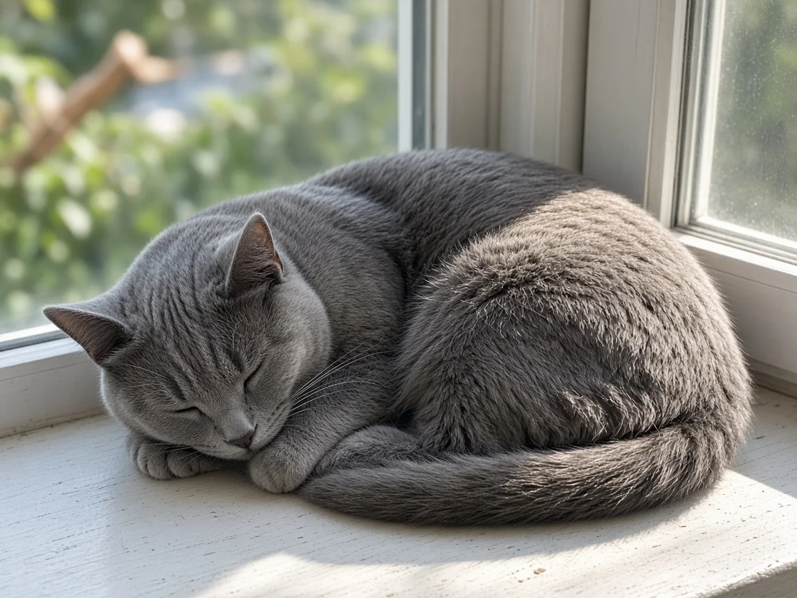

Why do cats sleep so much?
Healthy adult cats commonly sleep about 12 to 16 hours in a 24 hour day, broken into many short naps rather than one long night of sleep. That is normal for a predator that evolved to hunt in short bursts and rest between them. Kittens and older cats often sleep even more. Extra sleep is only a red flag when it arrives suddenly with other changes such as appetite loss, hiding or less grooming.

How much sleep is normal for a cat?
International Cat Care, the veterinary charity, and Cats Protection both put typical adult cat sleep in the 12 to 16 hour range each day, with plenty of individual variation. ASPCA general cat care guidance likewise treats long daytime rest as expected. Cats are polyphasic sleepers: they take many short sleep bouts across day and night instead of one consolidated block. Many house cats are more active at dawn and dusk (crepuscular), so a long stretch of afternoon napping is ordinary, not laziness.
Age changes the picture. Newborn kittens spend most of their time sleeping while they grow. Young adults often sit near the low end of that 12 to 16 hour band when they have space to play and hunt-like toys. Senior cats often sleep more again; our how long do cats live? guide covers aging stages where rest patterns shift.
Why predators rest more than people do
Sleep researcher Jerome Siegel's 2005 review in Nature on mammalian sleep notes that carnivores tend to sleep more than herbivores of similar size. Cats fit that pattern: hunting is energetically expensive and unpredictable, so resting between opportunities is adaptive. Domestic cats still carry that wiring even when bowls replace prey. A short chase around the living room, then a long nap on a warm windowsill, matches the same energy budget.
Laboratory EEG work also shows cats have clear slow-wave (deep) sleep and REM sleep, the stage linked with vivid dreaming in mammals. A 1990 study by Irene Tobler and Rudolf Scherschlicht in Behavioural Brain Research measured EEG slow-wave activity in domestic cats after different amounts of prior wakefulness and found that deeper slow-wave sleep increased after longer wake periods, the same homeostatic pattern seen in other mammals. In plain terms, a cat that has been busy will sleep more deeply afterward, not just longer.
What cat sleep looks like at home
- Light dozing with half-closed eyes: the cat can wake fast if something moves. Common on sofas and windowsills.
- Deep sleep with twitching whiskers, paws or ears: often REM. Brief twitches are normal; violent thrashing or crying is not and deserves a vet check.
- Choosing warm, elevated or enclosed spots: heat and cover help a resting predator feel safe. Boxes and high shelves are favorites for the same reason cats like boxes in general; see why do cats like boxes?.
- Night wandering: many cats nap hard by day and explore when the house is quiet. That alone is not a sleep disorder.
When more sleep means see a vet
A cat that has always been a champion sleeper is usually fine. Worry when sleep habits change quickly. International Cat Care flags sudden lethargy, especially with reduced appetite, drinking changes, litter box changes, hiding, or a dull coat, as a reason to book a veterinary exam rather than wait. Pain, infection, kidney disease, hyperthyroidism in older cats, and other common problems can look like "just sleeping more." Our cat health guide and how often should a cat see the vet? post cover when routine care is due.
Do not give human sleep aids or other medicines to make a cat quieter. That is dangerous and never a substitute for finding the cause. For everyday care that supports healthy rest (play, enrichment, safe resting spots), start with our cat care basics and behavior guide. Papers cited here are listed with DOIs on our cat research page.
Cat sleep FAQ
How many hours a day do cats sleep?
Most healthy adult cats sleep about 12 to 16 hours per day, often in many short naps. Kittens and senior cats commonly sleep more.
Is it normal for my cat to sleep all day?
Long daytime naps are normal, especially if your cat is active at dawn, dusk or night. Sudden all day sleep with less interest in food or play is not normal and needs a vet visit.
Do cats dream?
Cats have REM sleep, the stage linked with dreaming in mammals, and often twitch whiskers or paws during it. We cannot ask them what they experience, but the brain activity pattern matches other dreaming mammals.
Should I wake my sleeping cat?
Usually no. Let sleeping cats rest unless you need them for medicine, a vet trip or safety. Startle them gently from a short distance rather than grabbing them mid-sleep.
Why does my cat sleep more in winter?
Shorter days, less outdoor stimulation and a preference for warm spots can increase rest. A big, sudden jump in sleep still deserves a health check.
Sources
- International Cat Care: How much sleep does a cat need?
- Cats Protection: Sleep and rest
- Siegel J.M. (2005) Clues to the functions of mammalian sleep. Nature 437:1264 to 1271. doi:10.1038/nature04285
- Tobler I., Scherschlicht R. (1990) Sleep and EEG slow-wave activity in the domestic cat: effect of prior wakefulness. Behavioural Brain Research 38(1):41 to 50. doi:10.1016/0166-4328(90)90083-Q
- ASPCA: General Cat Care
Cite this page
Students and teachers are welcome to cite this page. Add your access date if your teacher or style guide asks for one.
APA (7th ed.)
MeowWise. (2026, November 5). Why do cats sleep so much? https://meowwise.com/blog/why-do-cats-sleep-so-much.html
MLA (9th ed.)
“Why do cats sleep so much?” MeowWise, 5 Nov. 2026, meowwise.com/blog/why-do-cats-sleep-so-much.html.
Chicago (bibliography)
MeowWise. “Why do cats sleep so much?” Last modified November 5, 2026. https://meowwise.com/blog/why-do-cats-sleep-so-much.html.
General education, not veterinary advice. If you are worried about your cat, contact your veterinarian; in an emergency, go to the nearest emergency vet.